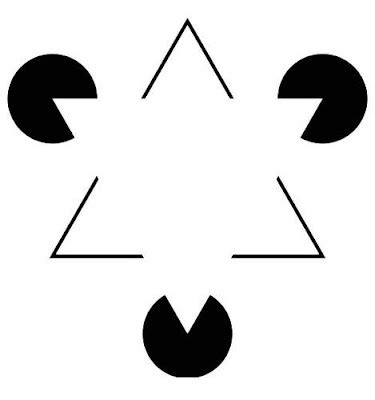

Lab 4: Vision, convolutions, recurrence
Contents
Lab 4: Vision, convolutions, recurrence#
By Clemens Bartnik & Amber Brands (June 2022) with edits/additions/deletion by Jelle Zuidema (September 2022). Much of the code has been taken from the Kietzmann Lab’s Github.
About#
In this lab we will explore information processing in a pretrained recurrent neural network (RNN) trained for object recognition from visual input and investigate the role of a recurrent information flow.
We will look at a neural network model that uses both convolutions (as in the convolutional neural nets we saw for audio and image processing) and recurrent connections (i.e., connection that break the feedforward structure we are used to in these models).

The lab assignment is based on this paper:
Thorat, S., Aldegheri, G., & Kietzmann, T. C. (2021). Category-orthogonal object features guide information processing in recurrent neural networks trained for object categorization. arXiv preprint arXiv:2111.07898. https://doi.org/10.48550/arXiv.2111.07898We advice you to open the paper in parallel to this notebook, since it offers background information as well as additional info with regard to methods and analysis.
What you’ll learn: At the end of this tutorial, you will…
see how datasets such as MNIST can be adapted to better understand how models perform object recognition.
get insights in how we can incorperate lateral and top-down connections to incorperate recurrent information in models.
study the role of category-orthogonal variables in solving object recognition.
Important In order to run the code correctly, go to Runtime –> Change runtime type and set it to GPU.
Setup#
To make use of the original code of the authors, an older version of tensorflow version (1.13 or 1.15) is required.
!pip uninstall tensorflow
!pip install tensorflow-gpu==1.15
!apt install --allow-change-held-packages libcudnn7=7.4.1.5-1+cuda10.0
# specifying the TensorFlow version; UPDATE (Sept 2022): this no longer works in Colab.
#%tensorflow_version 1.13
# install packages
import numpy as np
import pandas as pd
import tensorflow as tf
import matplotlib.pyplot as plt
import random
from scipy.ndimage.interpolation import zoom
from scipy.ndimage.interpolation import rotate
from random import shuffle
# import MNIST and fashion MNIST datasets
from tensorflow.examples.tutorials.mnist import input_data
from tensorflow.keras.datasets import mnist as mnist_plot
from tensorflow.keras.datasets import fashion_mnist as fashion_mnist_plot
# import pytroch
import torch
import torch.nn as nn
import torch.nn.functional as F
import torch.optim as optim
import torchvision
import torchvision.transforms as transforms
from torch.utils.data import Dataset, DataLoader
from torch.utils.data.sampler import SubsetRandomSampler
from torchsummary import summary
# suppress warnings and tensorflow warnings for visibility
import warnings
warnings.filterwarnings('ignore')
tf.logging.set_verbosity(tf.logging.ERROR)
# This command makes sure that the figure is plotted in the notebook instead of in a separate window!
%matplotlib inline
#Throughout the tutorial there will be exercises referred to as <font color='cornflowerblue'><b>ToThinks</b></font> including questions about the (preceding) text/material.
#@title Helper functions (you need to run this cell!)
# A function to scramble image chunks
def im_scram(im,parts_h): # scramble parts_h*parts_h equal parts of the given image
win_prop = parts_h
dimsh = np.shape(im)
im_new = np.zeros(dimsh)
dimsh_win = np.floor(dimsh[0]/win_prop)
n_cells = np.square(np.int(dimsh[0]/dimsh_win))
cell_c = np.int(dimsh[0]/dimsh_win)
ind_new = np.linspace(0,n_cells-1,n_cells).astype('int32')
while np.mean(ind_new == np.linspace(0,n_cells-1,n_cells).astype('int32')) == 1:
shuffle(ind_new)
for i in range(n_cells):
j = ind_new[i]
im_new[np.int(np.mod(i,cell_c)*dimsh_win):np.int(np.mod(i,cell_c)*dimsh_win+dimsh_win),
np.int(np.floor(i*1./cell_c*1.)*dimsh_win):np.int(np.floor(i*1./cell_c*1.)*dimsh_win+dimsh_win)] = im[
np.int(np.mod(j,cell_c)*dimsh_win):np.int(np.mod(j,cell_c)*dimsh_win+dimsh_win),
np.int(np.floor(j*1./cell_c*1.)*dimsh_win):np.int(np.floor(j*1./cell_c*1.)*dimsh_win+dimsh_win)]
return im_new
# A function to generate images and the respective labels for training and testing
def gen_images(n_imgs,n_set): # n_imgs required, set used (0 train, 1 val, 2 test) 8 objects in image (1 is intact), 2 levels of zoom, rotation and x/y pos for each object
imgs_h = np.zeros([n_imgs,1,100,100])
imgs_h1 = np.zeros([n_imgs,1,100,100])
labs_h = np.zeros([n_imgs,20])
pos_x_h = np.zeros([n_imgs,2])
pos_y_h = np.zeros([n_imgs,2])
size_h = np.zeros([n_imgs,2])
rot_h = np.zeros([n_imgs,2])
n_objs = 8
for n_im in np.arange(n_imgs):
inst_img = np.zeros([100,100])
inst_img1 = np.zeros([100,100])
obj_ord = np.linspace(0,n_objs-1,n_objs)
dum_obj_ind = 4+np.random.randint(n_objs/2)
dum_dat_ord = (np.random.random(8) < 0.5)*1.
for i in np.arange(n_objs):
if dum_dat_ord[i] == 0: # dataset M or F
if n_set == 0:
dathh = mnist.train
elif n_set == 1:
dathh = mnist.validation
elif n_set == 2:
dathh = mnist.test
inst_obj_ind = np.random.randint(np.shape(dathh.images)[0])
if i == dum_obj_ind:
inst_lab = np.where(dathh.labels[inst_obj_ind,:]==1)[0][0]
inst_obj = np.reshape(dathh.images[inst_obj_ind,:],(28,28))
else:
if n_set == 0:
dathh = fmnist.train
elif n_set == 1:
dathh = fmnist.validation
elif n_set == 2:
dathh = fmnist.test
inst_obj_ind = np.random.randint(np.shape(dathh.images)[0])
if i == dum_obj_ind:
inst_lab = 10 + np.where(dathh.labels[inst_obj_ind,:]==1)[0][0]
inst_obj = np.reshape(dathh.images[inst_obj_ind,:],(28,28))
dumh111 = (np.random.random(1)[0] > 0.5)*1
if dumh111 == 0: # zoom 0.9 or 1.5
inst_obj = zoom(inst_obj,0.9+(np.random.random(1)[0]-0.5)/5.) # zoom 0.8 to 1.
else:
inst_obj = zoom(inst_obj,1.5+(np.random.random(1)[0]-0.5)/5.) # zoom 1.4 to 1.6
if i == dum_obj_ind:
size_h[n_im,dumh111] = 1.
dumh111 = (np.random.random(1)[0] > 0.5)*1
if dumh111 == 0: # rotate 30 or -30
inst_obj = rotate(inst_obj,30+(np.random.random(1)[0]-0.5)*2*5,reshape=False) # rotate 25 to 35
else:
inst_obj = rotate(inst_obj,-30+(np.random.random(1)[0]-0.5)*2*5,reshape=False) # rotate -25 to -35
if i == dum_obj_ind:
rot_h[n_im,dumh111] = 1.
if i != dum_obj_ind:
inst_obj = im_scram(inst_obj,3) # scrambled if not object of interest
if np.mod(obj_ord[i],4) == 0: # x_loc up or down
x_loc = np.int(np.round(25 + (np.random.random(1)[0]-0.5)*2*2.5)) # 25 +- 2.5
y_loc = np.int(np.round(25 + (np.random.random(1)[0]-0.5)*2*2.5)) # 25 +- 2.5
if i == dum_obj_ind:
pos_y_h[n_im,0] = 1.
pos_x_h[n_im,0] = 1.
elif np.mod(obj_ord[i],4) == 1:
x_loc = np.int(np.round(75 + (np.random.random(1)[0]-0.5)*2*2.5)) # 75 +- 2.5
y_loc = np.int(np.round(25 + (np.random.random(1)[0]-0.5)*2*2.5)) # 25 +- 2.5
if i == dum_obj_ind:
pos_y_h[n_im,1] = 1.
pos_x_h[n_im,0] = 1.
elif np.mod(obj_ord[i],4) == 2:
x_loc = np.int(np.round(25 + (np.random.random(1)[0]-0.5)*2*2.5)) # 25 +- 2.5
y_loc = np.int(np.round(75 + (np.random.random(1)[0]-0.5)*2*2.5)) # 75 +- 2.5
if i == dum_obj_ind:
pos_y_h[n_im,0] = 1.
pos_x_h[n_im,1] = 1.
elif np.mod(obj_ord[i],4) == 3:
x_loc = np.int(np.round(75 + (np.random.random(1)[0]-0.5)*2*2.5)) # 75 +- 2.5
y_loc = np.int(np.round(75 + (np.random.random(1)[0]-0.5)*2*2.5)) # 75 +- 2.5
if i == dum_obj_ind:
pos_y_h[n_im,1] = 1.
pos_x_h[n_im,1] = 1.
inst_obj = (inst_obj-np.min(inst_obj))/(np.max(inst_obj)-np.min(inst_obj))
# print(np.int(np.floor(np.shape(inst_obj)[0]/2)),np.int(np.ceil(np.shape(inst_obj)[0]/2)),np.shape(inst_obj)[0])
inst_img[x_loc-np.int(np.floor(np.shape(inst_obj)[0]/2.)):x_loc+np.int(np.ceil(np.shape(inst_obj)[0]/2.)),y_loc-np.int(np.floor(np.shape(inst_obj)[1]/2.)):y_loc+np.int(np.ceil(np.shape(inst_obj)[1]/2.))] = (1-inst_obj)*inst_img[x_loc-np.int(np.floor(np.shape(inst_obj)[0]/2.)):x_loc+np.int(np.ceil(np.shape(inst_obj)[0]/2.)),y_loc-np.int(np.floor(np.shape(inst_obj)[1]/2.)):y_loc+np.int(np.ceil(np.shape(inst_obj)[1]/2.))] + (inst_obj)*inst_obj
if i == dum_obj_ind:
inst_img1[x_loc-np.int(np.floor(np.shape(inst_obj)[0]/2.)):x_loc+np.int(np.ceil(np.shape(inst_obj)[0]/2.)),y_loc-np.int(np.floor(np.shape(inst_obj)[1]/2.)):y_loc+np.int(np.ceil(np.shape(inst_obj)[1]/2.))] = (1-inst_obj)*inst_img1[x_loc-np.int(np.floor(np.shape(inst_obj)[0]/2.)):x_loc+np.int(np.ceil(np.shape(inst_obj)[0]/2.)),y_loc-np.int(np.floor(np.shape(inst_obj)[1]/2.)):y_loc+np.int(np.ceil(np.shape(inst_obj)[1]/2.))] + (inst_obj)*inst_obj
inst_img = (inst_img-np.min(inst_img))/(np.max(inst_img)-np.min(inst_img))
inst_img1 = (inst_img1-np.min(inst_img1))/(np.max(inst_img1)-np.min(inst_img1))
if np.isnan(np.min(inst_img)) or np.isnan(np.min(inst_img1)):
print('NaN in input')
exit(1)
imgs_h[n_im,0,:,:] = inst_img
imgs_h1[n_im,0,:,:] = inst_img1
labs_h[n_im,inst_lab] = 1.
return imgs_h,imgs_h1,labs_h,pos_x_h,pos_y_h,size_h,rot_h
Clone the Github repository to Google Drive:
!git clone https://github.com/KietzmannLab/svrhm21_RNN_explain.git
Cloning into 'svrhm21_RNN_explain'...
remote: Enumerating objects: 51, done.
remote: Total 51 (delta 0), reused 0 (delta 0), pack-reused 51
Unpacking objects: 100% (51/51), done.
Introduction#
Humans are able to recognize objects even when there is occlusion or clutter present in the image. As you can experience in the famous gestalt figure below humans perceive this image as if there would be a white triangle lying over black dots and another black triangle? Can you see it?

{kind=link}
But in fact there is no white triangle. However, we humans tend to group parts of the images such that we perceive coherent, global shapes. It has been argued that recurrence in the neural substrate responsible for visual processing may underlie computations that benefit task performance by making use of these contextual signals (Roelfsema et al., 2007; van Bergen & Kriegeskorte, 2020).
Feedforward Neural Networks (FNN) have been widely used to solve object recognition. However, Recurrent Neural Networks (RNN) – already popular for decades in language processing – have been recently been introduced into the domain of visual processing to help solve common problems of FNN approaches and to model information that humans seem to use when categorizing objects. They do this by incorporating an abundance of recurrent activity which means that the unit activations are a fuction both of the input and their prior activations. It is however, still unclear whether during object recognition category orthogonal information (such as objects location, orientation or scale) are discarded or used by RNNs as auxillary information. Looking at the image above suggests that these auxillary information can indeed be very important for object categorization.
The authors of our Key Paper try to shed light onto the role of auxiliary information. They do this by training and testing multiple instances of an RNN on an object categorization task while presenting target objects in cluttered environments. To investigate the inner workings of these models and to characterize which information related to auxiliary variables is present, they utilize diagnostic read-outs (probes or diagnostic classifiers) across layers and time.
###Goals of the lab assignment
In this computer lab, you will first replicate the process of generating the stimuli, followed by instantiating the networks. The core of the lab assignment is then to replicate some the main findings from the key paper, and to interpret the results.
Dataset#
Let’s start with visualizing some of the images contained in the vanilla versions of the MNIST and Fashion-MNIST (FMNIST) datasets: Both datasets contain 10 image classes consisting either a single digit number or a clothing item respectivly.
# load datasets
# it is important to note that read_data_sets will download vanilla MNIST when
# no path specified. Therefore we use the dowloaded datasets from the github page!
mnist = input_data.read_data_sets('/content/svrhm21_RNN_explain/MNIST_data', one_hot=True)
fmnist = input_data.read_data_sets('/content/svrhm21_RNN_explain/fMNIST_data', one_hot=True)
Extracting /content/svrhm21_RNN_explain/MNIST_data/train-images-idx3-ubyte.gz
Extracting /content/svrhm21_RNN_explain/MNIST_data/train-labels-idx1-ubyte.gz
Extracting /content/svrhm21_RNN_explain/MNIST_data/t10k-images-idx3-ubyte.gz
Extracting /content/svrhm21_RNN_explain/MNIST_data/t10k-labels-idx1-ubyte.gz
Extracting /content/svrhm21_RNN_explain/fMNIST_data/train-images-idx3-ubyte.gz
Extracting /content/svrhm21_RNN_explain/fMNIST_data/train-labels-idx1-ubyte.gz
Extracting /content/svrhm21_RNN_explain/fMNIST_data/t10k-images-idx3-ubyte.gz
Extracting /content/svrhm21_RNN_explain/fMNIST_data/t10k-labels-idx1-ubyte.gz
# define labels
mnist_class_names = ['0', '1', '2', '3', '4', '5', '6', '7', '8', '9']
fmnist_class_names = ['T-shirt/top', 'Trouser', 'Pullover', 'Dress', 'Coat',
'Sandal', 'Shirt', 'Sneaker', 'Bag', 'Ankle boot']
class_names = mnist_class_names + fmnist_class_names
# initiate plot
ncolumns = 3
fig, axs = plt.subplots(2, ncolumns, figsize=(15, 15))
# count images
mnist_img_count = len(mnist.train.images)
fmnist_img_count = len(fmnist.train.images)
# plot example images
for i in range(ncolumns): # columns
# choose random index and plot mnist example
sample = random.randint(0, mnist_img_count)
image = mnist.train.images[sample].reshape(28,28)
axs[0, i].imshow(image, cmap='gray')
# choose random index and plot fmnist example
sample = random.randint(0, fmnist_img_count)
image = fmnist.train.images[sample].reshape(28,28)
axs[1, i].imshow(image, cmap='gray')
if i == 1:
axs[0, i].set_title('MNIST')
axs[1, i].set_title('fashion MNIST')
# show plot
plt.show()
Introduce environment clutter#
As you could see the images from both datasets seem quite different from our human experience of how we perceive the world. For one thing, the objects to be recognized are isolated from other objects, making classification too easy.
To make classification more interesting – to study the effect of recurrent information flow – the authors introduce challenging visual conditions to the target images. To do so they manipulated the target objects in their location (x + y), orientation and scale as well as adding structured clutter i.e. randomly sampled fragments of other objects in the dataset.
# create cluttered images
img_num = 12 # number of images to create
img_set = 0 # set used (0 train, 1 val, 2 test)
# create images
inputs_v,_,labels_v,_,_,_,_ = gen_images(img_num, img_set)
# initiate plot
fig, axs = plt.subplots(3, 4, figsize=(20, 20))
# plot images
count = 0
for i in range(3):
for j in range(4):
# label
# plot image
img = inputs_v[count]
img = np.squeeze(img.reshape(100, 100, 1))
axs[i, j].imshow(img, cmap='gray')
# extract ground truth label
img_idx = np.argwhere(labels_v[count] == 1)[0][0]
axs[i, j].set_title('Ground truth: ' + class_names[img_idx])
# increment count
count = count + 1
# show plot
plt.show()
#@title <font color='cornflowerblue'><b>ToThink 1</b></font>
#@markdown How are the cluttered images generated? Try reverse engineering the scrambling operation that 'gen_img' uses (and check your guesses in the Helper functions above).
#@title <font color='red'><b>ToSubmit 1</b></font>
#@markdown Plot four images of the cluttered stimuli next to each other containing two pairs with the same ground truth labels (e.g., 2x '5' and 2x 'Sandal').
# you can put your code here
RNN architecture#
The RNN used for training and subsequent analyses consists of two convolutional layers followed by one fully connected (FC) layer, as illustrated in the paper below (Figure 2 in the paper). The architecture contained both lateral and top-down connections and the RNN was unrolled for 4 timesteps. Finally, the activations of the FC layer were concatenated and mapped to the classification output (i.e. class_names) using an FC layer.

Import network architecture#
Here we use the authors’ code from Github to instantiate their RNN implementation which incorporates both lateral and top-down connections. By clicking on the cell you can view their code to understand the implementation details.
#@title Defining the RNN class (click to see code)
class RNNet_all_fbr(nn.Module):
def __init__(self, n_feats=8, ker_size=5,t_steps=3,b_flag=1,g_flag=1,l_flag=1,t_flag=1):
super(RNNet_all_fbr, self).__init__()
self.conv1 = nn.Conv2d(1, n_feats, ker_size)
self.pool = nn.MaxPool2d(3, 3)
self.conv2 = nn.Conv2d(n_feats, n_feats*2, ker_size)
self.fc1 = nn.Linear(n_feats*2 * 9 * 9, n_feats*16)
self.fc2 = nn.Linear(n_feats*16*t_steps, 20)
self.dropout = nn.Dropout(0.5)
self.c1xb = nn.ConvTranspose2d(n_feats,1,7,3) # in_channel, out_channel, kernel_size, stride, padding
self.c2xb = nn.ConvTranspose2d(n_feats*2,1,20,10)
self.fc1xb = nn.Linear(n_feats*16, 100*100)
self.c1c1b = nn.Conv2d(n_feats, n_feats, ker_size, 1, 2)
self.c2c1b = nn.ConvTranspose2d(n_feats*2,n_feats,16,10)
self.fc1c1b = nn.Linear(n_feats*16, 96*96*n_feats)
self.c2c2b = nn.Conv2d(n_feats*2, n_feats*2, ker_size, 1, 2)
self.fc1c2b = nn.Linear(n_feats*16, 28*28*n_feats*2)
self.fc1fc1b = nn.Linear(n_feats*16, n_feats*16)
self.c1xg = nn.ConvTranspose2d(n_feats,1,7,3) # in_channel, out_channel, kernel_size, stride, padding
self.c2xg = nn.ConvTranspose2d(n_feats*2,1,20,10)
self.fc1xg = nn.Linear(n_feats*16, 100*100)
self.c1c1g = nn.Conv2d(n_feats, n_feats, ker_size, 1, 2)
self.c2c1g = nn.ConvTranspose2d(n_feats*2,n_feats,16,10)
self.fc1c1g = nn.Linear(n_feats*16, 96*96*n_feats)
self.c2c2g = nn.Conv2d(n_feats*2, n_feats*2, ker_size, 1, 2)
self.fc1c2g = nn.Linear(n_feats*16, 28*28*n_feats*2)
self.fc1fc1g = nn.Linear(n_feats*16, n_feats*16)
self.n_feats = n_feats
self.t_steps = t_steps
self.b_flag = b_flag
self.g_flag = g_flag
self.l_flag = l_flag
self.t_flag = t_flag
def forward(self, x):
actvs = {}
actvs[0] = {}
actvs[1] = {}
actvs[2] = {}
actvs[3] = {}
fb_acts = {}
fb_acts[0] = {}
fb_acts[1] = {}
fb_acts[2] = {}
fb_acts[3] = {}
fb_acts_comb = {}
fb_acts_comb[0] = {}
fb_acts_comb[1] = {}
fb_acts_comb[2] = {}
fb_acts_comb[3] = {}
for i in np.arange(2):
fb_acts[0][i] = {}
fb_acts[1][i] = {}
fb_acts[2][i] = {}
fb_acts[3][i] = {}
fb_acts_comb[0][i] = {}
fb_acts_comb[1][i] = {}
fb_acts_comb[2][i] = {}
fb_acts_comb[3][i] = {}
for j in np.arange(3):
fb_acts[0][i][j] = {}
fb_acts[1][i][j] = {}
if j > 0:
fb_acts[2][i][j-1] = {}
if j > 1:
fb_acts[3][i][j-2] = {}
actvs[0][0] = F.relu(x) - F.relu(x-1)
c1 = F.relu(self.conv1(actvs[0][0]))
actvs[1][0] = self.pool(c1)
c2 = F.relu(self.conv2(actvs[1][0]))
actvs[2][0] = self.pool(c2)
actvs[3][0] = F.relu(self.fc1(actvs[2][0].view(-1, self.n_feats*2 * 9 * 9)))
actvs[4] = actvs[3][0]
if self.t_steps > 0:
for t in np.arange(self.t_steps-1):
fb_acts[0][0][0][t] = self.t_flag*self.c1xb(actvs[1][t])
fb_acts[0][0][1][t] = self.t_flag*self.c2xb(actvs[2][t])
fb_acts[0][0][2][t] = self.t_flag*(self.fc1xb(actvs[3][t])).view(-1,1,100,100)
fb_acts_comb[0][0][t] = fb_acts[0][0][0][t] + fb_acts[0][0][1][t] + fb_acts[0][0][2][t]
fb_acts[0][1][0][t] = self.t_flag*self.c1xg(actvs[1][t])
fb_acts[0][1][1][t] = self.t_flag*self.c2xg(actvs[2][t])
fb_acts[0][1][2][t] = self.t_flag*(self.fc1xg(actvs[3][t])).view(-1,1,100,100)
fb_acts_comb[0][1][t] = fb_acts[0][1][0][t] + fb_acts[0][1][1][t] + fb_acts[0][1][2][t]
dumh000 = (x + self.b_flag*(self.t_flag*(self.c1xb(actvs[1][t])+self.c2xb(actvs[2][t])+(self.fc1xb(actvs[3][t])).view(-1,1,100,100)))) * (1.+self.g_flag*self.t_flag*(self.c1xg(actvs[1][t])+self.c2xg(actvs[2][t])+(self.fc1xg(actvs[3][t])).view(-1,1,100,100)))
actvs[0][t+1] = (F.relu(dumh000) - F.relu(dumh000-1))
fb_acts[1][0][0][t] = self.l_flag*self.c1c1b(c1)
fb_acts[1][0][1][t] = self.t_flag*self.c2c1b(actvs[2][t])
fb_acts[1][0][2][t] = self.t_flag*(self.fc1c1b(actvs[3][t])).view(-1,self.n_feats,96,96)
fb_acts_comb[1][0][t] = fb_acts[1][0][0][t] + fb_acts[1][0][1][t] + fb_acts[1][0][2][t]
fb_acts[1][1][0][t] = self.l_flag*self.c1c1g(c1)
fb_acts[1][1][1][t] = self.t_flag*self.c2c1g(actvs[2][t])
fb_acts[1][1][2][t] = self.t_flag*(self.fc1c1g(actvs[3][t])).view(-1,self.n_feats,96,96)
fb_acts_comb[1][1][t] = fb_acts[1][1][0][t] + fb_acts[1][1][1][t] + fb_acts[1][1][2][t]
c1 = F.relu(self.conv1(actvs[0][t+1])+self.b_flag*(self.l_flag*self.c1c1b(c1)+self.t_flag*(self.c2c1b(actvs[2][t])+(self.fc1c1b(actvs[3][t])).view(-1,self.n_feats,96,96)))) * (1.+self.g_flag*(self.l_flag*self.c1c1g(c1)+self.t_flag*(self.c2c1g(actvs[2][t])+(self.fc1c1g(actvs[3][t])).view(-1,self.n_feats,96,96))))
actvs[1][t+1] = self.pool(c1)
fb_acts[2][0][0][t] = self.l_flag*self.c2c2b(c2)
fb_acts[2][0][1][t] = self.t_flag*(self.fc1c2b(actvs[3][t])).view(-1,self.n_feats*2,28,28)
fb_acts_comb[2][0][t] = fb_acts[2][0][0][t] + fb_acts[2][0][1][t]
fb_acts[2][1][0][t] = self.l_flag*self.c2c2g(c2)
fb_acts[2][1][1][t] = self.t_flag*(self.fc1c2g(actvs[3][t])).view(-1,self.n_feats*2,28,28)
fb_acts_comb[2][1][t] = fb_acts[2][1][0][t] + fb_acts[2][1][1][t]
c2 = F.relu(self.conv2(actvs[1][t+1])+self.b_flag*(self.l_flag*self.c2c2b(c2)+self.t_flag*(self.fc1c2b(actvs[3][t])).view(-1,self.n_feats*2,28,28))) * (1.+self.g_flag*(self.l_flag*self.c2c2g(c2)+self.t_flag*(self.fc1c2g(actvs[3][t])).view(-1,self.n_feats*2,28,28)))
actvs[2][t+1] = self.pool(c2)
fb_acts[3][0][0][t] = self.l_flag*self.fc1fc1b(actvs[3][t])
fb_acts[3][1][0][t] = self.l_flag*self.fc1fc1g(actvs[3][t])
fb_acts_comb[3][0][t] = fb_acts[3][0][0][t]
fb_acts_comb[3][1][t] = fb_acts[3][1][0][t]
actvs[3][t+1] = F.relu(self.fc1(actvs[2][t+1].view(-1, self.n_feats*2 * 9 * 9))+self.b_flag*self.l_flag*self.fc1fc1b(actvs[3][t])) * (1.+self.g_flag*self.l_flag*self.fc1fc1g(actvs[3][t]))
actvs[4] = torch.cat((actvs[4],actvs[3][t+1]),1)
actvs[5] = torch.log(torch.clamp(F.softmax(self.fc2(actvs[4]),dim=1),1e-10,1.0))
return actvs, fb_acts, fb_acts_comb
Initialize the RNN using the hyperparameters used by the authors.
# Hyperparameters
n_feats = 8 # in Conv layer 1
ker_size = 5 # in Conv layer 1
b_h = 0 # bias modulation flag
g_h = 1 # gain modulation flag
l_h = 1 # lateral interactions flag
t_h = 1 # top-down interactions flag
net_num = 1
t_steps = 4
net_save_str = 'rnn_bglt_'+str(b_h)+str(g_h)+str(l_h)+str(t_h)+'_t_'+str(t_steps)+'_num_'+str(net_num)
# initialize RNN
#net = RNNet_all(n_feats,ker_size,t_steps,b_h,g_h,l_h,t_h)
net = RNNet_all_fbr(n_feats,ker_size,t_steps,b_h,g_h)
net = net.float()
Download and load pretrained weights#
On the projects OSF page the authors published pretrained weights for the RNN they used. The RNN was trained for 20-way classification using a cross-entropy loss. They used the Adam optimizer for training, with a batch size of 32, and learning rate of \(10^{−4}\). The network was trained for 300.000 iterations.
# get weights from OSF
# first set of weights
!wget -c https://osf.io/wxmkv/download/ -O rnn_bglt_0111_t_4_num_1.pth
# second set of weights
!wget -c https://osf.io/98tgk/download -O rnn_bglt_1011_t_4_num_1.pth
# Load weights into the initialized RNN model
net.load_state_dict(torch.load(net_save_str +'.pth',map_location=torch.device('cpu')))
net.eval()
RNNet_all_fbr(
(conv1): Conv2d(1, 8, kernel_size=(5, 5), stride=(1, 1))
(pool): MaxPool2d(kernel_size=3, stride=3, padding=0, dilation=1, ceil_mode=False)
(conv2): Conv2d(8, 16, kernel_size=(5, 5), stride=(1, 1))
(fc1): Linear(in_features=1296, out_features=128, bias=True)
(fc2): Linear(in_features=512, out_features=20, bias=True)
(dropout): Dropout(p=0.5, inplace=False)
(c1xb): ConvTranspose2d(8, 1, kernel_size=(7, 7), stride=(3, 3))
(c2xb): ConvTranspose2d(16, 1, kernel_size=(20, 20), stride=(10, 10))
(fc1xb): Linear(in_features=128, out_features=10000, bias=True)
(c1c1b): Conv2d(8, 8, kernel_size=(5, 5), stride=(1, 1), padding=(2, 2))
(c2c1b): ConvTranspose2d(16, 8, kernel_size=(16, 16), stride=(10, 10))
(fc1c1b): Linear(in_features=128, out_features=73728, bias=True)
(c2c2b): Conv2d(16, 16, kernel_size=(5, 5), stride=(1, 1), padding=(2, 2))
(fc1c2b): Linear(in_features=128, out_features=12544, bias=True)
(fc1fc1b): Linear(in_features=128, out_features=128, bias=True)
(c1xg): ConvTranspose2d(8, 1, kernel_size=(7, 7), stride=(3, 3))
(c2xg): ConvTranspose2d(16, 1, kernel_size=(20, 20), stride=(10, 10))
(fc1xg): Linear(in_features=128, out_features=10000, bias=True)
(c1c1g): Conv2d(8, 8, kernel_size=(5, 5), stride=(1, 1), padding=(2, 2))
(c2c1g): ConvTranspose2d(16, 8, kernel_size=(16, 16), stride=(10, 10))
(fc1c1g): Linear(in_features=128, out_features=73728, bias=True)
(c2c2g): Conv2d(16, 16, kernel_size=(5, 5), stride=(1, 1), padding=(2, 2))
(fc1c2g): Linear(in_features=128, out_features=12544, bias=True)
(fc1fc1g): Linear(in_features=128, out_features=128, bias=True)
)
#Running the Model
We start by again generating images, and now feed them as input to the model. The output after t_steps number of timesteps, as well as intermediate results, are saved in outputs.
# create cluttered images
img_num = 5 # number of images to create
img_set = 1 # set used (0 train, 1 val, 2 test)
# create cluttered images using the authors helper function gen_images
inputs_v,inputs_v_c,labels_v,_,_,_,_ = gen_images(img_num, img_set)
inputs_v = torch.from_numpy(inputs_v).float()
inputs_v_c = torch.from_numpy(inputs_v_c).float()
# pass it to the network
outputs,_,out_fbr_comb = net(inputs_v.float())
#@title <font color='red'><b>ToSubmit 2</b></font>
#@markdown Verify that the weights you just downloaded define a pretty good network to classify images. Report the accuracy on a sample of +-50 images. Find an example that is misclassified, and include the image in your report together with several correctly classified images. (You may find the next two code blocks useful).
# print true label and predicted label for each of the input images in inputs_v
for i in range(img_num):
print('Index:', i, 'True label:', class_names[np.where(labels_v[i,:])[0][0]],
'; Predicted label:', class_names[np.where(outputs[5][i].detach().numpy()==np.max(outputs[5][i].detach().numpy()))[0][0]])
# initiate plot
fig, axs = plt.subplots(1, 5, figsize=(20, 20))
# plot images
count = 0
for i in [0,1,2,3,4]:
# plot image
img = inputs_v[count]
img = np.squeeze(img.reshape(100, 100, 1))
axs[i].imshow(img, cmap='gray')
# extract ground truth label
img_idx = np.argwhere(labels_v[count] == 1)[0][0]
axs[i].set_title('Ground truth: ' + class_names[img_idx])
# increment count
count = count + 1
# show plot
plt.show()
#@title <font color='cornflowerblue'><b>ToThink 2</b></font>
#@markdown How would you define a control condition against which you could compare the accuracy you just calculated?
Response = "" #@param {type:"string"}
Recurrent connections#
In this part of the tutorial, we will follow the authors in how they analyzed the networks’ activations to shed light on whether or not auxiliary variables get extracted and represented in the RNN or if they are suppressed. This will help us to understand the information flow in the network, as well as the network performance.
First, like the authors, we will study the presence activation patterns across layers and timesteps. Second, once we can formulate some hypotheses on the role of the reucrrent connections, we will investigate what happens if we perturbed the input data (or parts of the network) in specific way to test these hypotheses.
#@title <font color='cornflowerblue'><b>ToThink 3</b></font>
#@markdown Look back at the network architecture in the "Recurrent neural network architecture" section above. How is the recurrent connectivity operationalized? What could be the purpose of the recurrent connections?
Response = "" #@param {type:"string"}
#@title <font color='red'><b>ToSubmit 3</b></font>
#@markdown Can you infer the number of lateral and recurrent connections? Write down the number as well as the associated layer names for the whole model (e.g. lateral: number of connections: ..., names: e.g. fc1, fc2, ...)? Hint: look at the picture depicting the model as well as the table generated after you loaded the weights.
Studying category-orthogonal information flow#
The hypothesis of the authors is that the recurrent connections play a big role in allowing the network to focus on information that is relevant for category-membership, while surpressing information that is orthogonal to category-membership. In the following code block, you can plot the activations across layers over time to get an idea about how the network represents the input and how those representations change.
Run this code for different input images (by changing \(i\)).
plt.figure(figsize=(20,20))
i = 2
print('True label:', class_names[np.where(labels_v[i,:])[0][0]], '; Predicted label:', class_names[np.where(outputs[5][i].detach().numpy()==np.max(outputs[5][i].detach().numpy()))[0][0]])
for j in np.arange(t_steps):
plt.subplot(4,t_steps,t_steps+j+1)
plt.imshow(outputs[0][j][i,0,:,:].detach().numpy(),cmap='gray')
plt.xticks([])
plt.yticks([])
plt.title('t = '+str(j+1),fontsize=20)
True label: Coat ; Predicted label: T-shirt/top
Now, let’s have a look at man input images at once, and the effect of the recurrent information flow for all timesteps:
plt.figure(figsize=(15,15))
for i in np.arange(4):
print('True label:', class_names[np.where(labels_v[i,:])[0][0]], '; Predicted label:', class_names[np.where(outputs[5][i].detach().numpy()==np.max(outputs[5][i].detach().numpy()))[0][0]])
for j in np.arange(t_steps):
plt.subplot(4,t_steps,(i)*t_steps+j+1)
plt.imshow(outputs[0][j][i,0,:,:].detach().numpy(),cmap='gray')
plt.xticks([])
plt.yticks([])
plt.title('t = '+str(j+1),fontsize=20)
True label: 6 ; Predicted label: 6
True label: 9 ; Predicted label: 9
True label: T-shirt/top ; Predicted label: T-shirt/top
True label: Ankle boot ; Predicted label: Ankle boot
Paper Figure 3 (B)
#@title <font color='red'><b>ToSubmit 4</b></font>
#@markdown Briefly describe how the network maintains object and orthogonal information over time and how this relates to the lateral/recurrent connections.
Now let’s have a look how information is maintained. More particularly, we will look at both the auxiliary variables as well as the category information.
dec_acc1 = np.zeros([4,t_steps,5,2,5])
out_acc1 = np.zeros([5,2])
fbr_accs_all_comb1 = np.zeros([4,t_steps-1,2,5,5])
for net_num1 in np.arange(5):
dec_accs_str = 'svrhm21_RNN_explain/analyses/'+'dec_acc'+'rnn_bglt_'+str(b_h)+str(g_h)+str(l_h)+str(t_h)+'_t_'+str(t_steps)+'_num_'+str(net_num1+1)+'.npy'
with open(dec_accs_str, 'rb') as f:
dec_acc = np.load(f)
out_acc = np.load(f)
fbr_accs_all_comb = np.load(f)
dec_acc1[:,:,0,:,net_num1] = np.mean(dec_acc[:,:,0,:,:],3)
dec_acc1[:,:,1,:,net_num1] = np.mean(np.mean(dec_acc[:,:,1:3,:,:],4),2)
dec_acc1[:,:,2:,:,net_num1] = np.mean(dec_acc[:,:,3:,:,:],4)
out_acc1[net_num1,:] = np.mean(out_acc,1)
fbr_accs_all_comb1[:,:,:,0,net_num1] = np.mean(fbr_accs_all_comb[:,:,:,0,:],3)
fbr_accs_all_comb1[:,:,:,1,net_num1] = np.mean(np.mean(fbr_accs_all_comb[:,:,:,1:3,:],4),3)
fbr_accs_all_comb1[:,:,:,2:,net_num1] = np.mean(fbr_accs_all_comb[:,:,:,3:,:],4)
var_names = ['Category','Location','Scale','Orientation']
plt.figure(figsize=(5,4.2))
for i in np.arange(1):
plt.subplot(1,1,i+1)
for j in np.arange(4):
plt.plot(np.arange(t_steps)+1,np.transpose(np.mean(dec_acc1[j,:,i,0,:],1))*100.)
y = np.transpose(dec_acc1[j,:,i,0,:])*100.
ci = 1.96 * np.std(y,0)/np.sqrt(5)
plt.fill_between(np.arange(t_steps)+1, (np.mean(y,0)-ci), (np.mean(y,0)+ci), alpha=.3)
if i == 0:
plt.plot(np.arange(t_steps)+1,0*np.transpose(np.mean(dec_acc1[0:4,:,i,0,:],2))+5,'k--')
plt.xticks(np.arange(t_steps)+1,fontsize=25)
plt.yticks(fontsize=25)
if i == 0:
plt.legend(['Input','Conv1','Conv2','FC'],fontsize=20)
plt.ylim([0,100])
plt.ylabel('Decoding accuracy',fontsize=25)
else:
plt.ylim([50,100])
plt.tick_params(axis=u'both', which=u'both',length=5,color='black',top=False, bottom=True, left=True, right=False)
plt.title(var_names[i],fontsize=25)
plt.xlabel('Timestep',fontsize=25)
print('Output category accuracies: ',np.mean(out_acc1,0)[0])
print('Auxiliary variable avg. decoding through time: ',np.mean(np.mean(np.mean(dec_acc1[:,:,1:4,0,:],3),2),0))
print('Auxiliary variable avg. decoding through layer depth: ',np.mean(np.mean(np.mean(dec_acc1[:,:,1:4,0,:],3),2),1))
#@title <font color='red'><b>ToSubmit 5</b></font>
#@markdown Please plot the decoding accuracy for the auxiliary variables (i.e., location, scale, orientation) as well, similar to the plot above.
var_names = ['Location','Scale','Orientation']
# please write the code below
# plt.figure(figsize=(...)
# for i in np.arange(...):
# plt.subplot(...)
# ...
############################
Paper Figure 3 (A)
#@title <font color='cornflowerblue'><b>ToThink 3</b></font>
#@markdown How would you interpret the plots above? How is information about auxiliary variables contributing to the decoding accuracy?
Response = "" #@param {type:"string"}
Perturbation analysis#
Now next you ask if the succesful decoding of auxiliary variables from recurrent information flow also functionally contributes. For this, design a small computational experiment where you conduct a a permutation test.
#@title <font color='red'><b>ToSubmit 6</b></font>
#@markdown Design a small computational experiment to investigate the role of the recurrent connections. Report at least one graph, and compare it to one from the original paper.

Below is some plotting code that may be useful to reproduce the graphs from the original paper.
org_accs_h = np.zeros([5,1])
pert_accs_h = np.zeros([5,4,2,4,3])
pert_accs_cat_sep = np.zeros([5,2,2,4,3])
for net_num1 in np.arange(5):
out_str = 'svrhm21_RNN_explain/analyses/'+'fb_perturb-'+'rnn_bglt_'+str(b_h)+str(g_h)+str(l_h)+str(t_h)+'_t_'+str(t_steps)+'_num_'+str(net_num1+1)+'.npy'
with open(out_str, 'rb') as f:
original_accuracy = np.load(f)
perturbed_accuracies = np.load(f)
org_accs_h[net_num1] = np.mean(original_accuracy)*100
pert_accs_h[net_num1,0,:,:,:] = np.mean(np.mean(perturbed_accuracies[0:2,:,:,:,:],4),0)*100
pert_accs_h[net_num1,1:3,:,:,:] = np.mean(perturbed_accuracies[2:4,:,:,:,:],4)*100
pert_accs_h[net_num1,3,:,:,:] = np.mean(np.mean(perturbed_accuracies[4:6,:,:,:,:],4),0)*100
pert_accs_cat_sep[net_num1,0,:,:,:] = np.mean(np.mean(perturbed_accuracies[4:5,:,:,:,:],4),0)*100
pert_accs_cat_sep[net_num1,1,:,:,:] = np.mean(np.mean(perturbed_accuracies[5:6,:,:,:,:],4),0)*100
pert_names = ['Location','Orientation','Scale','Category (avg)']
lay_names = ['Input','Conv1','Conv2','FC']
perturbed_relative = np.zeros([4,4,3])
pert_rel_se = np.zeros([4,4,3])
for lay in np.arange(4):
for pert in np.arange(4):
for th in np.arange(3):
perturbed_relative[pert,lay,th] = np.mean((pert_accs_h[:,pert,1,lay,th] - pert_accs_h[:,pert,0,lay,th])/org_accs_h)
pert_rel_se[pert,lay,th] = 1.96*np.std((pert_accs_h[:,pert,1,lay,th] - pert_accs_h[:,pert,0,lay,th])/org_accs_h)/np.sqrt(5)
plt.figure(figsize=(23,5))
pert_names = ['Loc.','Ori.','Scl.','Cat.']
for lay in np.arange(4):
plt.subplot(1,4,lay+1)
for th in np.arange(3):
plt.plot(np.arange(4)+1,perturbed_relative[:,lay,th])
plt.fill_between(np.arange(4)+1, (perturbed_relative[:,lay,th]-pert_rel_se[:,lay,th]), (perturbed_relative[:,lay,th]+pert_rel_se[:,lay,th]), alpha=.3)
plt.plot(np.arange(6),0*np.arange(6),'k-')
plt.xticks(np.arange(4)+1,pert_names,fontsize=25)
plt.yticks(fontsize=25)
plt.ylim([-.05,0.8])
plt.xlim([0,5])
plt.title('Recurrent flow to '+lay_names[lay],fontsize=25)
if lay == 0:
plt.legend(['T = 2','T = 3','T = 4'],fontsize=25)
plt.ylabel('Functional importance',fontsize=25)
plt.tick_params(axis=u'both', which=u'both',length=5,color='black',top=False, bottom=True, left=True, right=False)
Paper Figure 4 (D)